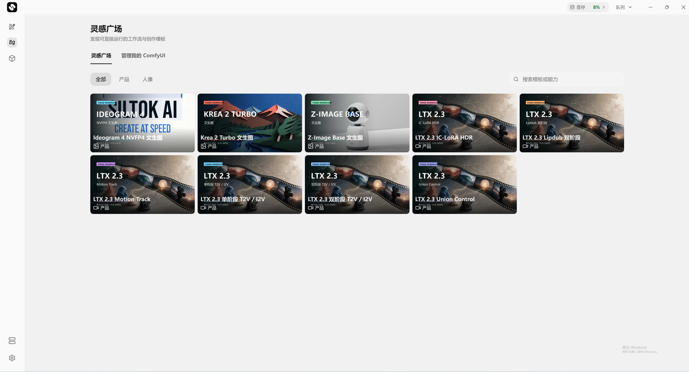

个人 AI 生产力
SILTOK
把大智能
装进小设备
给视频创作者的个人 AI 主机
自研引擎 × 本地模型 × 一体化创作
ASUS 华硕 × 硕捷 × 硅基词元
公司定位
把算力，变成自己的生产力
专注端侧 AI，让大模型在个人设备上真正运行
个人 AI 主机创作者自己的算力
Siltok Studio
统一创作入口
Siltok Speed
自研端侧推理
AI Station
软硬件一体交付
从视频创作切入，走向每个人的 AI 生产力。
短剧 / 动画 / 广告 / 电商 / 视觉创作
核心团队
技术、产品与商业化，在同一支团队
全链路复合型团队：技术底蕴 + 商业化能力 + 产品落地经验
白鹏
CEO
10 年小米集团高管经历
历任小米电视、互联网、商业及政企业务负责人，直接向雷军汇报。
主创小米电视、小爱同学音箱；带领小米商业部实现年收入超 200 亿元。
沈游人
CTO
清华计算机博士
前海致 CTO，兼具 Intel、蚂蚁等科研背景。
10 年以上端侧操作系统、AI 数据库系统研发经验。
郑纬民
首席科学顾问
中国工程院院士
清华大学教授。
为高性能计算方向提供学术与产业支持。
发展势能
成立半年，完成 3 轮融资
一线机构领投，持续推进端侧 AI 产品落地
3轮融资 · 成立半年内完成
底层技术 → 产品能力
推理引擎与创作软件共同构建一体化体验。
个人设备 → 创作生产力
消费级硬件与多模态生成结合，
让高频内容创作拥有自己的算力。
让高频内容创作拥有自己的算力。
技术体系
Siltok Speed，三层技术壁垒
流式模型技术 × 极致性能优化 × 前瞻模型架构
≋
流式模型
算到哪层，加载哪层
⌘
异构协同
CPU / GPU / NPU 等资源协同
∞
多模同构
共享底层能力，统一调度
流式模型
模型很大，设备不必很大
通过按需加载与算载并行，改变模型的端侧运行方式
完整模型
Layer N
…
Layer 3
Layer 2
Layer 1
按需加载
步骤 1
步骤 2
步骤 3
算载并行 → 端侧设备持续计算
16GB
运行 30B+
参数大模型
参数大模型
低延迟 / 按需加载
复杂模型端侧运行
复杂模型端侧运行
模型支持依具体模型、配置与运行条件而异。技术图为原理示意。
性能优化
把硬件资源，用到更充分
CPU / GPU / NPU / Memory / SSD / PCIe 统一进入资源池
GPU 利用率（MFU）
Diffusers
55.2%
Siltok Speed
95.5%
端到端耗时
296.9s
129.3s
约 2.3 倍提速
同组测试对比：具体模型、硬件与测试设置未完整披露；实际表现随任务变化。
模型架构
一个底座，连接多模态能力
以 Diffusion Model 为重点布局方向，面向下一代 AI 应用预布局
统一调度Diffusion Model
LLM
文字构思与语言能力
VLM
视觉与语言的协同理解
DiT
图像与视频生成能力
共享底层能力
具身智能 / 世界模型：架构预布局
SILTOK AI STATION
给视频创作者的个人 AI 主机
ASUS 华硕 × 硕捷 × 硅基词元
创作能力，
开箱即用
开箱即用
预装模型与 Siltok Studio
本地生成，数据自主掌控
本地生成，数据自主掌控
64GB DDR5 2TB NVMe SSD
产品实物主视觉
预留 · 待补充
SILTOK STUDIO
创作，就在一个工作台里
让灵感即刻进入创作，让每一次生成都有迹可循

生成
文字对话 / 图片生成 / 视频生成
工作流
灵感模板 / 教程 / ComfyUI
模型
筛选 / 下载 / 安装 / 卸载
管理
任务进度 / 历史结果 / 主机状态
创作流程
从灵感，到可继续打磨的作品
每一步都有入口，每一次生成都有记录
选模板01
模板 / 教程 / ComfyUI
填输入02
提示词 / 参考素材 / 参数
本地生成03
进度 / 耗时 / 任务队列
继续迭代04
历史结果 / 修改 / 保存
创作方式
镜头表达，不止一种起点
从文字构想，到参考驱动，再到角色演绎
构建场景
文生视频 / 首尾帧 / 多关键帧
延续素材
参考视频 · 延长 · 重绘
驱动角色
音频驱动 / 角色动画
角色替换与镜头迭代
角色替换与镜头迭代
效率与成本
同一项任务，两种算力选择
MiniMax H3 · 15 秒 · 768P，本地视频生成
RTX 5070 Ti
16GB 显存
10
分钟 / 最快
¥0.021 / 秒
15 秒约 ¥0.315（同口径折算）
RTX 5090
32GB 显存
4.5
分钟 / 最快
¥0.017 / 秒
15 秒约 ¥0.255（同口径折算）
15 秒 / 768P / MiniMax H3。最快耗时非平均值；成本按三年折旧估算，实际随负载与电费变化。
本地创作
未公开的创意，留在自己的设备
本地推理 + 本地存储，让创作资产自主掌控
脚本
参考图
未发布素材
参考图
未发布素材
无需上传云端完成本地生成
保存目录可设置
生成结果在自己的目录中管理。
历史任务可追溯
查看进度、耗时与已完成结果。
主机状态可见
切换主机、管理成员与资源状态。
账号登录、模型下载与更新等功能需要网络。
模型生态
文字、图片、视频，各就各位
本地模型组合，覆盖视频、图片与文字创作
视频
MiniMax-H3-33B
LTX-2.5-22B / Scail2-Wan2.1-14B
图片
FLUX-Dev-12B
Boogu-Image-Turbo-10B / SenseNova-U1.5-8B
文字
Qwen3.6-35B
本地构思、问答与文字生成
完整配置
两款配置，一张表看清
两款共用相同处理器、内存、存储与主板平台
配置
RTX 5070 Ti 版
RTX 5090 版
显卡 / 显存
华硕 RTX 5070 Ti / 16GB
华硕 RTX 5090 / 32GB
处理器
AMD 锐龙 7 9700X
AMD 锐龙 7 9700X
内存 / 存储
64GB DDR5 / 2TB NVMe SSD
64GB DDR5 / 2TB NVMe SSD
主板
ProArt B850-CREATOR WIFI NEO
ProArt B850-CREATOR WIFI NEO
机箱
华硕 PA401 木艺铁韵版
华硕 PA602 木艺铁韵版
电源
TUF GAMING 750B EVO
TUF GAMING 1200G EVO
持续进化
让设备，持续变得有用
模型适配、软件迭代与创作支持，共同推进
01
计划
模型适配
优质新模型发布后，
计划一周内完成适配推送。
计划一周内完成适配推送。
02
规划
功能迭代
画布、批量自动化等能力，
按照后续版本计划推进。
按照后续版本计划推进。
03
服务
创作支持
技术与内容双团队，
持续更新内容模板。
持续更新内容模板。
后续功能与服务以正式发布及交付约定为准。
PERSONAL AI
让算力
成为自己的生产力
Siltok AI Station
开箱即用 / 本地生成 / 自主掌控
ASUS 华硕 × 硕捷 × 硅基词元